INSIDE by CNCD (code: wili, jouni, juliet;
graphics: destop; music: Yolk & Legend; sound: DSMI by OC/Virtual
Visions; extender: PMODE/W), released at The Gathering 1996. 113 KB of
executable, a 2.7 MB LZSS-packed INSIDE.DAT (96 files), a
4-channel-ish AMF module EYE.AMF (677 KB). 182.75 s.
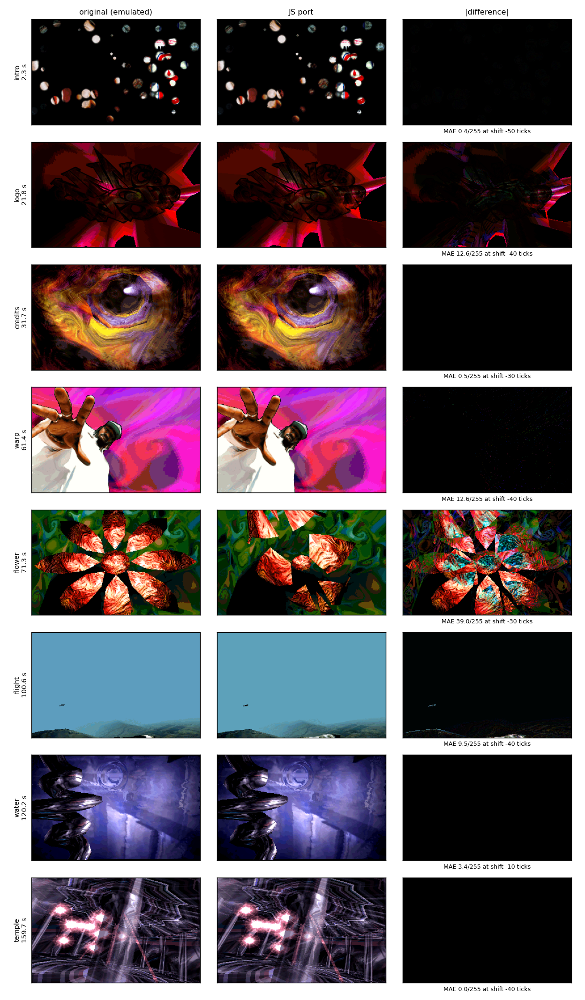
Figure: one frame of each scene, the original run headless under emulation (left), the JavaScript port (middle) and the absolute difference (right). The golden run starts a scene "frames since its trigger", so the port frame is matched with the best time shift (printed under each row).
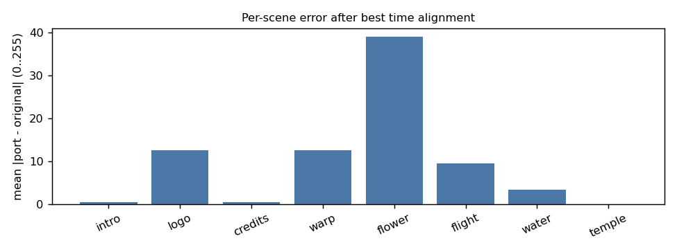
Figure: mean absolute RGB error (0-255) per scene after that
alignment. The temple is bit-exact; the flower scene's error (39) is not
a timing shift (a search over +-400 ticks does not lower it): its vertex
shades contain rand() (section 4), the port embeds the
table dumped from one reference run, and this golden run, started
'frames since the trigger', draws a different one, so the petals differ.
The scene's own comparison (75 % of the frames pixel-exact, see its
section) uses the matching table.
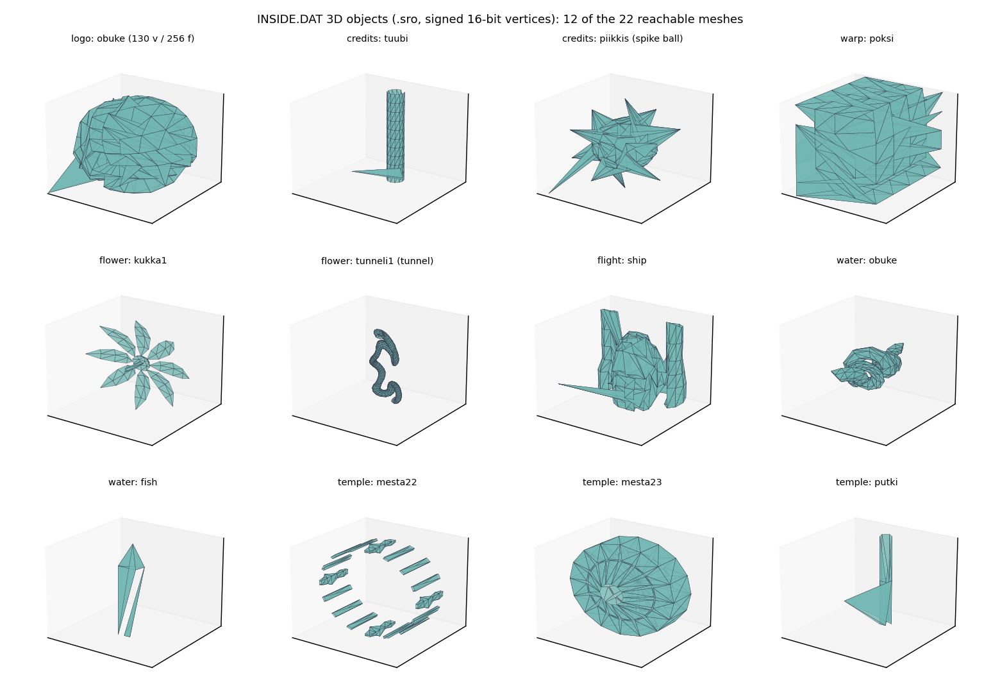
Figure (3D): twelve of the meshes in INSIDE.DAT
(.sro: signed 16-bit vertices, triangle faces). An
interactive viewer (three.js, orbit/zoom/wireframe) is in web/viewer3d.html. Regenerate
with python3 tools/make_figures.py (after running
golden.py and render_node.mjs for the START
times listed in the script) and
python3 tools/export_meshes.py > web/assets/meshes.json.
fy = fx * 5/6
(fx = 42*128 = 5376, fy = 4480 for the logo's
fov 42; 200/240 = 0.8333). The port draws the real 320x200 index buffer
into a canvas stretched to a 4:3 box.{order, row, handler} (0x1032e4) is compared with the DSMI
position every main-loop iteration. 1 row = 22 ticks = 0.0769 s. The
handlers either start a scene (two callbacks: A per tick, B per frame),
stop it, or fire a palette operation (white flash 0x1c498,
inverted flash 0x1c454, fade to black
0x1c438). The demo timeline is the song
position, which is why the port can seek: it sets the module
position and re-renders a pure function of the tick.| time | order:row | scene | what you see |
|---|---|---|---|
| 0:00 - 0:19.6 | 0:00 - 3:63 | intro | still picture revealed by wandering "light drops" |
| 0:19.6 - 0:29.5 | 3:63 - 5:63 | logo | the CNCD logo, a camera inside a spinning spiky star |
| 0:29.5 - 0:59 | 5:63 - 11:63 | credits | flight through a procedural tube, credit names, then a spike ball |
| 0:59 - 1:08.9 | 11:63 - 14:00 | warp (nigga 1/2) | big sprite behind a 2-texture warped grid |
| 1:08.9 - 1:38.4 | 14:00 - 19:63 | flower | environment-mapped, morphing flowers in a textured tunnel, flashes |
| 1:38.4 - 1:58 | 19:63 - 23:63 | flight | heightfield landscape with fog, three env-mapped ships, sun and lens flares |
| 1:58 - 2:16.6 | 23:63 - 27:48 | water | corkscrew, fish and a ripple-refraction picture |
| 2:16.6 - 2:27.6 | 27:48 - 29:63 | warp again | variants 3/4 |
| 2:27.6 - 2:37.5 | 29:63 - 31:63 | twirl | 5 variants of the polar-table spiral warp |
| 2:37.5 - 3:02.8 | 31:63 - 36:24 | temple (tunnel2) | glass temple, light beams, ten flares; fade-out at 35:48 |
A complete software engine, written for this demo and then re-used
scene after scene. re/notes_engine.md has every offset; the
structure:
double matrix at +0x28, parent chain, flags), meshes
(vertex 0x40 B, face 0x34 B, material 0x44 B), lights (range + peak),
billboards (flare/sun/smoke), 2D sprites (types 1..4). Matrices are
doubles; the rotation of an object is accumulated per
tick (M *= Rinc in the ISR callback), which is why
the port keeps checkpoints and replays.d = Mcam^T (obj - cam), vertex positions in 1/128 units),
projection to 28.4 fixed point screen coordinates, outcodes for the 4
sides + near plane, back-face cull by integer face normal, per-vertex
lighting (I = (peak - |D|*peak/range) * n.D/(|D|*512),
shade 0..0x3e0, table row = shade>>5), near-plane clipping into up
to two triangles, radix sort of faces by mean depth
(painter's algorithm, 3 passes of 8 bits), then the face functions.| fn | name | per pixel |
|---|---|---|
| 0x30e5c | GOURAUD | shade[(s>>16)<<8 + tex[u,v]] |
| 0x2edb0 | TEX | tex[u,v] (flat) |
| 0x2e264 | GOURAUD2 | shade2[s2<<8 + shade[s1<<8 + tex]] (shade +
fog) |
| 0x3269c | BLEND | shd[tex<<8 + dst] (translucency through a 64 KB
table) |
| 0x32dc8 | SHADEDST | shd[s<<8 + dst] (darken/lighten the existing
pixel, gouraud) |
| 0x332e0 | LIGHTMAP | shade[lmap[u2,v2]<<8 + tex] |
Each has an affine and a perspective-correct version (spans of 2^(n-1) pixels with a reciprocal per span), selected per face by bits 10..12 of its flags. Every scene of the demo uses the affine version - the textures hide it.
0x36cc4) is the
only uv generator ever enabled: u,v from the transformed
vertex normal, giving chrome flowers, glass and metal fish for free with
a 256x256 picture..shd files (16 KB =
64 rows x 256, or 64 KB = 256 x 256) map (level, colour)
-> colour. The palettes were built to make this work (ramps of 64
levels per base colour group); .int and some
.shd are blend tables, .qnt
quantisation/ light tables, .sdw shadow tables,
.fog fog tables.web/js/engine3d.js, 43 KB)
reproduces this bit-exactly in palette-index space: 180/180 recorded
random triangles identical on every face function, the logo scene
278/278 frames identical. Everything is reverse-engineered, not
approximated, except the points flagged in the README.A 320x200 picture (intro/intro.raw) is revealed
by light. 130 "drops" (position f32, energy) deposit light into a 16-bit
light buffer; each frame the buffer is smoothed in place
((4c + l + r + u + d)/8, so it diffuses), then
fb[i] = intro.shd[clamp(light,0,63)<<8 | pixel] - the
64-row shade table maps the picture to 64 brightness levels. The emitter
centre is a random walk driven by sines
(A0 += sin(.02t)*47 + cos(.0232t) + sin(.0369t)*4.4 ...),
re-rolled by rand() when it leaves the screen; each drop
has a 1 in 20 chance per frame to respawn near it with a random energy.
A dark disc of radius 60 around (80,80) is never lit (the drops are
rejected there). After 14.77 s all 130 drops respawn with high energy:
the picture floods with light. Ported pixel-exact.
logo/obuke.sro: a spiky star of 130 vertices,
256 faces, radius ~516. The camera sits at (0,0,100), i.e.
inside the star, looking down +Z; the star rotates
about three axes (R = Euler(-0.01, 0.00867, 0.0123) per
tick), a point light sits at the origin (range 550, peak 1600). Every
face is textured with a 256x256 twirl texture
(twlogo.raw) and lit through logo.shd. Half of
the faces cross the near plane each frame: the logo scene is the heavy
exerciser of the near-clip code. Over it: the "logo mask"
(inmask.raw, 253x147, values 0..15) darkens the star
through inmask.shd in the shape of the letters (a drop
shadow), and from 22.15 s the "INSIDE" text (inside.raw,
249x139, colour key 0) is drawn 3 px right, 4 px down. Ported
bit-exact.
A flight through a procedural tube.
credits/tuubi.sro has 11 rings x 12 vertices (132
vertices, 240 faces), scaled 7.0, and the same 11 rings
are re-skinned every frame from a 1024-ring flight-path table
(each row: ring centre, 12 brightnesses, 12 radius factors 0.67..1.6;
generated at start-up by ~20 summed sines plus rand(); the
port embeds the 110 KB table). The texture (tunnel.raw,
256x1024) scrolls one ring per 10 path rings; each vertex shade is
brightness minus an linear distance fog (asm snippet 10). The camera
follows the path with exponential smoothing
(S1 = 0.8 S1 + 0.2 P) and a 1 degree/tick roll; 12
additive smoke billboards (sauhu.raw 64x64 +
smoke.shd) float along the path (the bright orbs). At 7:00,
7:32, 8:00, 8:32, 9:00, 9:32 a white flash introduces the next credit
name (DESTOP, WILI, JOUNI, JULIET, YOLK & LEGEND:
kredu*.raw blended with tunnel.int at
(0,117)); at 9:48 the spike ball
piikkis.sro (252 vertices, 260 faces,
environment-mapped with piikkis.raw) catches the camera
(its follow offset decreases by 0.015 ring/tick). The border mask
wtrmask.raw darkens the screen edges until then.
839/841 frames bit-exact.
A big transparent sprite (a person; sprite1/2/4/9.raw)
in front of a warped, rotating 8x8-vertex grid (7x7
quads, 98 triangles) that is textured with two textures at
once: each vertex has two uv pairs
(512i + aA sin a + aB sin b + aC sin c, 512j + ...) driven
by three phase accumulators, and the rasteriser 0x33a82
outputs shd[tex2[u2,v2]<<8 | tex1[u1,v1]] - the
.shd here is a 256x256 blend table, so two
scrolling textures interfere into a liquid pattern. The event at 61.5 s
and 146.4 s flips the sign of the warp frequencies. Variants 3 and 4
(second pass) add a room box (poksi.sro, 98
vertices, 192 faces, 2688 x 6600 x 6000 units), a lit gouraud
floor and a shadow quad (shadow4/9.raw, .sdw).
The port reproduces variants 1 and 2 (~96 % identical pixels, the rest
+-1 texel) and variants 3/4 bit-exactly (0 differing pixels): the room
is the engine's poksi.sro box at scale 8, drawn with
per-triangle material uvs (the mapper prologue 0x37e48 copies 3 uv pairs
from the material into the vertices), lit by one animated point light,
with a 16 level BLEND shadow quad; camera, light and shadow
vertex are closed forms of the tick counters (see
re/notes_nigga.md).
A tunnel (tunneli1.sro, 20 KB,
732 vertices, 1440 faces: faces >= 350 hidden, a
sliding window of visible faces at 0.75 faces/tick) is textured
(jeesus1/2.raw) with a per-quad material
rectangle - no per-vertex uv; the prologue 0x37e3c
copies the material's uv rectangle into each triangle and scrolling is
six dword writes per frame (3.7 texel/tick). Its vertex shades come from
a table:
300 sin(.05x) cos(.04y) + 700 sin(.04926 i) + rand()%600 - 300.
In the middle: a flower from 10 morph targets
(kukka1.sro, kukka1-2..8,
kukka2*.sro, each ~110 vertices, ~125
faces, 2.3 KB) blended with t = |sin(phase)|
(period 157 ticks), environment-mapped chrome (TEX, unshaded), spinning
(euler(ax[idx], spin, 0), spin += 0.02/tick), parented to
the camera 1500 units ahead. The 9 open/close events (14:24 .. 19:12)
alternate white and inverted flashes and switch to the next shape. The
camera follows a LightWave scene
(tunnel1.lws, 2631 bytes) with spline-interpolated keys
(Catmull-Rom, scale 3000), evaluated at sub-frame resolution (asm
snippet 4 of notes_flower). 75 % of the golden frames
pixel-exact, the rest differs on flash frames.
A heightfield landscape with fog: a
128x128 height table (sum of sin/cos terms, smoothed and mirrored; each
cell {height, shade}) is rendered as a 19x19-vertex window
(648 faces) following the camera, centred on the camera cell; texture
coordinates u = ((gx%18)+c)*8192/36 so the 512x512
map.raw tiles with a period of 18 cells without popping.
Per-pixel fog[fl][shd[sl][tex]] is three chained table
lookups (asm 1). Cell shade from the slope:
cos(atan(dh*k)+c) computed with one
fpatan (atan2(y,1)). Three env-mapped
ships (ship.sro: 200 vertices, 399
faces; river picture as environment) fly a rand()-steered
formation; the camera follows with its own jitter. The
sun (sun.raw, 128x128, keyed on the sky
colour) and 8 lens flares (lens1..5.raw: 74x63, 52x43,
31x23, 12x11, 4x4, plus the additive flare.shd) are placed
along the line from the screen centre through the sun,
C + k(S-C) with k = 0, -0.2, 0.5, 0.3, -1.3, -0.9, -0.47,
-2.0, only when the sun is within the screen +-12 px.
Approximate: the ships' env normals, the exact span
rounding.
water.raw) seen through a
ripple simulation (asm snippet 7); 8 fish
(fish.sro, 8 vertices, 10 faces, scale
0.15) swim by a sine formula
S = sin((t+171i)*0.00158) + cos((t-57i)*0.0027) + 0.1 cos(t*0.0081)
(heading += S degrees, speed max(30 S + 10, 15)), turn around when they
leave the screen, and each fish's screen position drops a
splash in the wave buffer (the triangle-shaped wedge of snippet
12): the fish stir the water. Their 4,5,6 vertices and normals wiggle
with sines (the normals drive the env map, so the picture swims over the
fins). Drawn through water.int (BLEND) over the
ripples;water/obuke.sro:
287 vertices, 570 faces, scale 0.6), env-mapped with
waterenv.raw, spinning 0.84 turns/s about its own
axis;waterdata.js.The jeesus1/2, nigga2/4 and
river pictures spiral under a precomputed polar
table: the original builds, once at start-up, a 64000-entry
table mapping each screen pixel to (radius byte, angle byte); per frame
only 256 words W[r] are rebuilt from four float32 phase
accumulators and two sines, and every pixel does
tex[ T1 + W[T0] ] (asm snippet 8). Five parameter sets,
switched at 30:24, 30:48, 30:12, 31:36 with a white flash and a palette
swap (the table is walked in order so 30:12 fires together with 30:48,
an oddity the port reproduces). Pixel-exact except around
flashes.
A dark glass temple viewed by a camera in orbit
(parent pivot spinning 0.01 rad/tick, camera roll 0.005, zoom
0.6 + 0.3 sin(...)):
mesta21.sro (49 v / 84 f) opaque env-mapped;
mesta22.sro (192 v / 256 f) glass (BLEND
through temple.int, env-mapped); mesta23.sro
(173 v / 268 f) gouraud with its own uv, lit by a breathing point light
(range = |sin| * 1000);putki.sro (15 v / 20
f each, scaled 1.5,1.5,5.3 / 3,3,4.6), drawn with SHADEDST (they light
up what is behind them), whose vertex shades slide on one sine (asm
13);flare.raw 128x104 sorted with the mesh faces in
the same radix list, so glass can occlude them);ch:cl, dh:dl,
ah:al).y > 199 fixup writing x, a scene that never clears its
buffers (the glass temple's trails).The container (loader 0x1c0e8): u32 usize + LZSS stream
(flag byte LSB first, 1 = literal; 0 = 2-byte match: distance
b0 | (b1&0xf0)<<4, length
(b1&15)+3); the unpacked 2,721,868 bytes end with a
directory of 0x30-byte entries
{name[0x20], size, offset, pad[2]} and a final count.
tools/dat.py unpacks it (re/dat_listing.txt
lists all 96 entries); web/js/dat.js reads it in the
browser. Formats:
| ext | format |
|---|---|
.raw |
8-bit palette-indexed pixels (320x200, 256x256, 512x512, 256x1024 or sprites of free size) |
.pal |
768 bytes, 256 x RGB, 6-bit VGA values |
.shd |
64 or 256 rows x 256: shade or blend table |
.int .qnt .sdw .fog |
auxiliary 256x256 / 128x256 / 64x64 tables (blend, light levels, shadow, fog) |
.sro |
u32 0x001df020, 0x20, nverts, faceofs, nfaces, then
vertices {i16 x,y,z; u16 u,v; u16 0} (12 B) and faces
{u16 0; u16 i1,i2,i3} (8 B). Some files have a 0x14-byte
header whose first dword is a size, not the magic: the loader ignores
it. |
.lws |
LightWave scene text (only flower/tunnel1.lws) |
Scene objects: logo obuke 130 v / 256 f; credits
tuubi 132 v / 240 f, piikkis 252 v / 260 f;
nigga poksi 98 v / 192 f; flower tunneli1 732
v / 1440 f, kukka1.. 111 v / 125 f (kukka2: 109 / 129) x 11
targets; flight ship 200 v / 399 f; water
obuke 287 v / 570 f, fish 8 v / 10 f; temple
mesta21 49/84, mesta22 192/256,
mesta23 173/268, putki 15/20 (x3). The whole
DAT contains duplicates that the program can never reach (3x
temple/putki.sro, 2x flower/kukka1.sro,
because the lookup is a linear strcmp, first match
wins).
All art lives in INSIDE.DAT (section 6); the offsets
below are into the unpacked 2,721,868-byte blob
(re/dat_listing.txt has every offset,
tools/dat.py extracts to re/assets/). Nothing
is stored as an image file: every picture is a headerless 8-bit
palette-indexed raster (.raw) whose size is
not in the file; the dimensions come from the original's code
(re/notes_*.md, checked here: width x height equals the
byte size for every file below). Palettes are separate .pal
files, 768 B = 256 x RGB, 6-bit VGA values (previews
scale v*255/63); each scene loads its own and switches the
DAC to it. In the nigga variants the first three palette
bytes are zeroed at load so that colour 0 is black and acts as the
sprite key. "Colours" = distinct indices actually present in the raster
(counted from the extracted files). Previews:
figures/inside_art_*.png (generated with Pillow from
re/assets, one palette per scene as in the table).
| file (offset in blob) | size | palette | colours | role |
|---|---|---|---|---|
intro/intro.raw (17152) |
320x200 | intro.pal |
256 | the title picture, plain copy, index 0 transparent;
intro.shd (16 KB, 64 x 256) maps index 0 -> 76 |
logo/twlogo.raw (81152) |
256x256 | logo.pal |
103 | texture of the star (one material, shade table
logo.shd) |
logo/inside.raw (163840) / inmask.raw
(202091) |
249x139 / 253x147 | logo.pal |
256 / 16 | logo lettering (key 0) / its mask, values 0..15, darkens the star
through inmask.shd (16 x 256) |
credits/tunnel.raw (244146) |
256x1024 | tunnel.pal |
221 | tube texture, scrolled (shade tunnel.shd, blend
tunnel.int) |
credits/piikkis.raw (657842) |
256x256 | tunnel.pal |
208 | texture of the spike ball at the end of the credits |
credits/sauhu.raw (588210) |
64x64 | tunnel.pal |
31 | orb/smoke billboard (12 of them), additive through
smoke.shd (256 x 256) |
credits/wtrmask.raw (816192) |
320x200 | tunnel.pal |
32 | border darkening mask (blend wtrmask.int) |
credits/kredu1,7,2,8,3,6.raw |
173x75, 129x75, 146x75, 154x72, 318x82, 294x75 | tunnel.pal |
30..32 | credit names (DESTOP, WILI, JOUNI, JULIET, YOLK & LEGEND;
kredu6 is never shown) |
flight/map.raw (1044079) |
512x512 | map.pal |
170 | terrain colour texture (map.shd 64 x 256 light,
map.fog 128 x 256 fog) |
flight/river.raw (1355375) |
256x256 | map.pal |
74 | fish-eye sky/ground environment map for the ships |
flight/sun.raw (1027695) |
128x128 | map.pal |
25 | ready-made sun, key colour 221 (sky) |
flight/lens1..5.raw (954400..) |
74x63, 52x43, 31x23, 12x11, 4x4 | map.pal |
8, 6, 6, 6, 4 | lens-flare hexagons, 0 = transparent, additive through
flare.shd (256 x 256) |
temple/temple.raw (1427303) |
256x256 | temple.pal |
256 | glass-temple texture (blend temple.int) |
temple/flare.raw (1492839) |
128x104 | temple.pal |
56 | 10 flare billboards (additive flare.shd) |
nigga/niggaN.raw N = 1, 2, 9, 4 |
256x256 | niggaN.pal |
98, 165, 138, 180 | warp-grid background / room texture (.shd or
.qnt shade tables) |
nigga/spriteN.raw |
164x156, 172x200, 274x147, 170x168 | niggaN.pal |
156, 103, 107, 77 | foreground sprites (colour 0 = key), placed at (0,44), (0,0), (46,53), (94,28) |
nigga/shadow9.raw / shadow4.raw |
128x128 / 256x256 | niggaN.pal |
16 / 16 | shadow quad texture, 16 levels, blended through
shadowN.sdw (64 x 64) |
water/water.raw, waterenv.raw |
320x200, 256x256 | water.pal |
143, 135 | background picture; environment texture for the spiral (blend
water.int) |
flower/jeesus1.raw, jeesus2.raw |
256x256 | jeesus.pal |
98, 160 | flower texture; tunnel texture (also reused by the twirl scene,
together with nigga2/4 and river) |
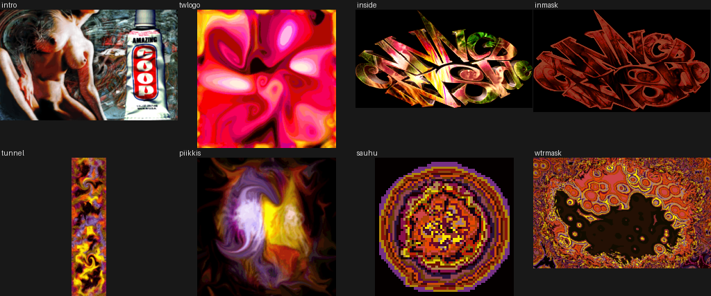
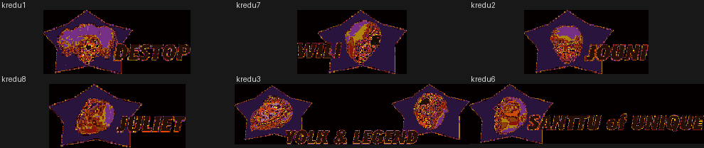
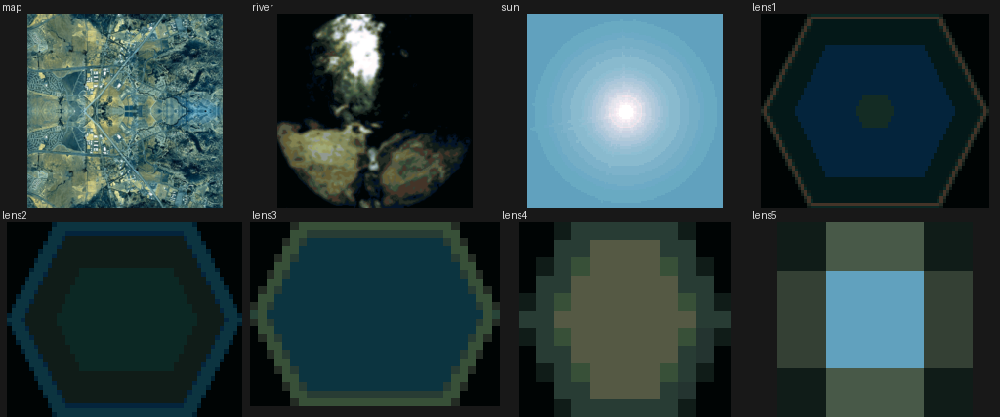
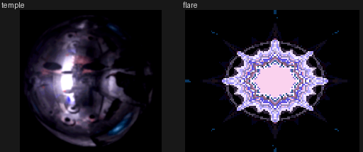
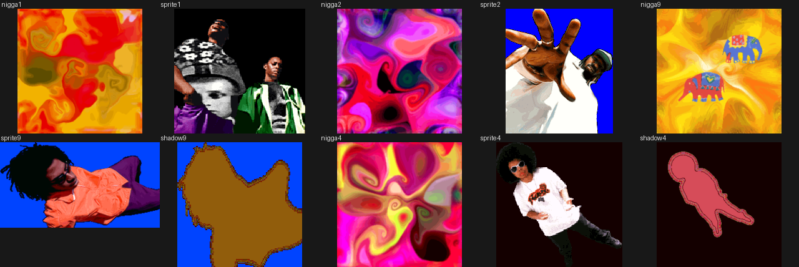
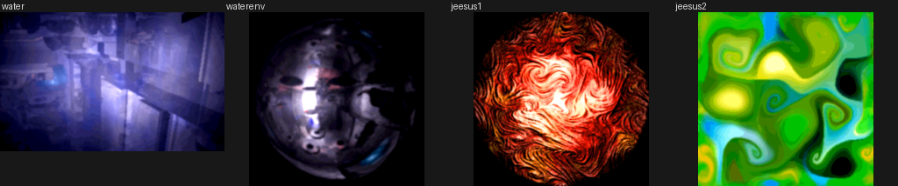
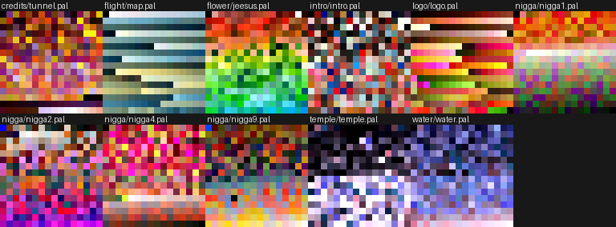
The .shd/.int/.qnt/.sdw/.fog files are lookup tables,
not pictures: shade tables shd[level][texel], blend tables
int[src<<8 | dst] (not a plain add), additive flare
tables shd[texel][dst], fog fog[level][colour]
(rows >= 62 are all 221, the sky colour). The unused
water.shd is loaded but never read by the water scene.
.sro,
22 distinct files)Header
u32 {magic 0x1df020 | size, 0x20 | 0x14, nverts, faceofs, nfaces},
vertices {i16 x,y,z; 6 more bytes} at 0x14, faces
{u16 0; u16 a,b,c} at faceofs (triangles
only). Counts read from the extracted files (they agree with the list in
section 6):
| mesh | bytes | vertices | faces | coordinate range (per axis, int16) |
|---|---|---|---|---|
logo/obuke |
3640 | 130 | 256 | +-512 (star) |
credits/tuubi |
3536 | 132 | 240 | y -488..69, z -352..623 |
credits/piikkis |
5136 | 252 | 260 | +-435, +-457, +-511 |
nigga/poksi |
2744 | 98 | 192 | x +-337, y -413..425, z -382..511 (drawn at scale 8) |
flower/tunneli1 |
20324 | 732 | 1440 | x -1526..2826, y -5265..224, z -15659..-5531 |
flower/kukka1, -2..-8 (8
files; a 9th copy of kukka1 is unreachable) |
2352 | 111 | 125 | about +-1000 (the 11 morph targets of the flower) |
flower/kukka2, kukka2-2 |
2360 | 109 | 129 | +-1000 / +-697 |
flight/ship |
5624 | 200 | 399 | +-626, -773..281, -767..780 |
water/obuke |
8024 | 287 | 570 | spiral, x -940..607, y -1639..1923 |
water/fish |
208 | 8 | 10 | +-150, +-226, -824..971 |
temple/mesta21 / 22 / 23 |
1280 / 4372 / 4240 | 49 / 192 / 173 | 84 / 256 / 268 | up to +-1843 / +-5758 / +-8192 |
temple/putki (3 copies, first used) |
372 | 15 | 20 | z +-608 |
Wireframes of every file (edges of the triangle list, one fixed view,
figures/inside_art_meshes_wire.png; the shaded view of 12
of them is figures/objects_3d.png):
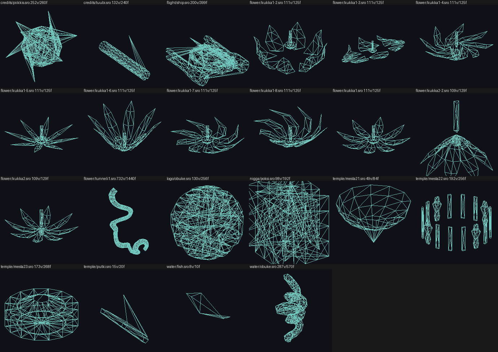
.lws (flower/tunnel1.lws, 2631 B) is the
LightWave scene of the flower tunnel (text).
{i32 height, i32 shade} built by init functions
0x1d450 / 0x1d36c, heights -1448..246, shade
160..1023. They are not derived from
map.raw; the port stores a dump from the emulator in
web/js/flightdata.js (HTS, SHD,
Int16): figures/inside_art_terrain_tables.png. The terrain
mesh itself (19x19 vertices around the camera cell, 512 units per cell)
is regenerated every frame from the table.0x2284c): 1024
rows x 0x6c bytes (ring centre, 12 ring brightnesses 0..1008, 12 radius
factors 0.67..1.6), a running sum of about 20 sines plus values from the
Watcom rand() stream; dumped to
web/js/creditsdata.js. The tube's 11 x 12 vertices are
rewritten each frame from it.rand() at init) are embedded in
tunnel2.js; the water scene's rand state and fish start are
derived from srand(0x45eafc)
(waterdata.js).notes_intro.md).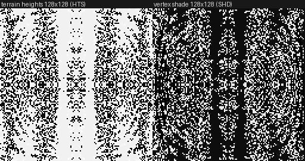
INSIDE.EXE is PMODE/W (LE-style stub with compressed
objects): re/unpack_pmodew.py runs the PMODE/W loader under
Unicorn and dumps the 64 MB guest memory at the program
entry (mem0.bin), so every address is a linear address into
a pristine image.re/emu.py boots the real program (flat model, stub
DOS/VGA/DMA/PIT) and re/golden.py runs it headless with a
virtual 285.7 Hz clock: ground-truth frames for every
scene.rand(), and ported the code to
web/js/scenes/*.js; correctness measured against the golden
frames in palette-index space (0 differing pixels = bit-exact)
and with tools/cmp.py in RGB.